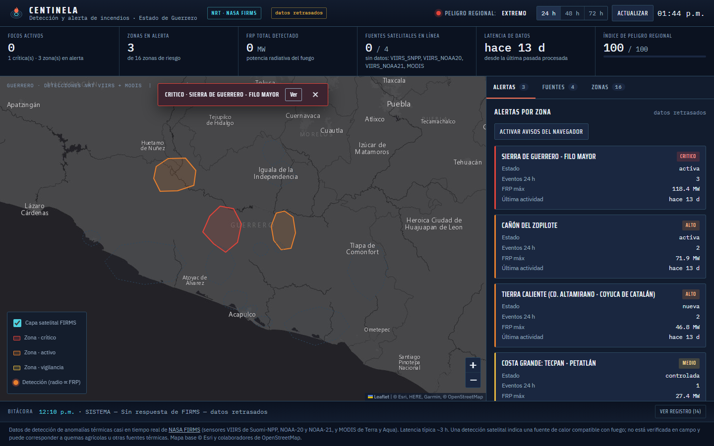
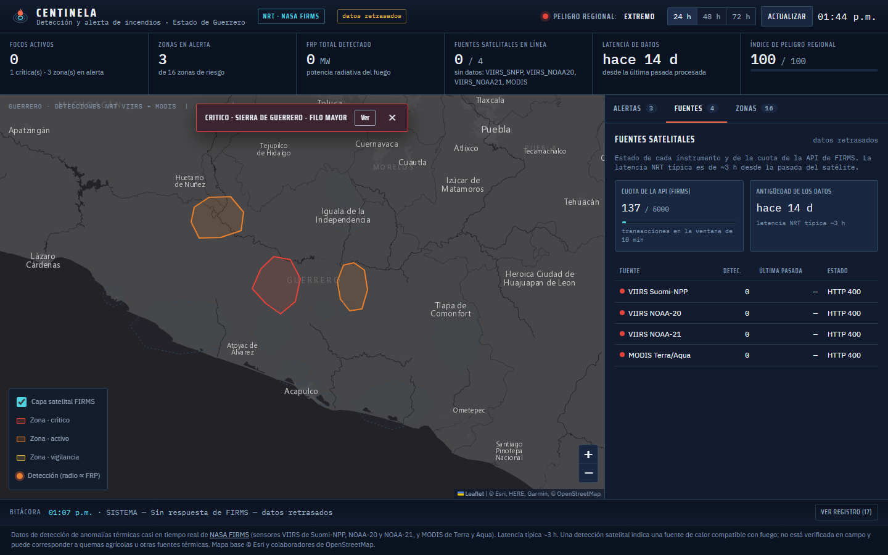
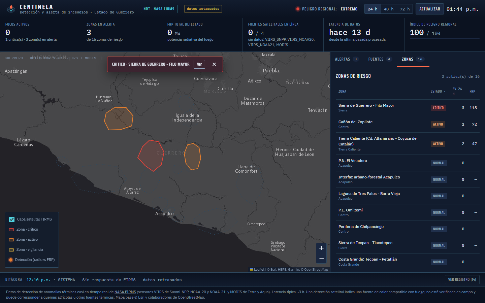
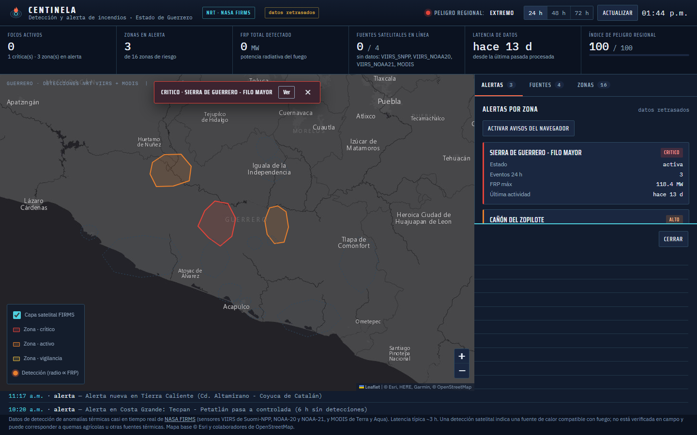
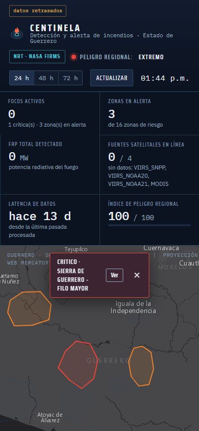

Demo visual · eventos sintéticos
CENTINELA
Una muestra de la consola interna para leer el mapa, revisar alertas y entender la fuente de cada detección.
CENTINELA sondea la API de NASA FIRMS cada pocos minutos, deduplica detecciones cercanas en tiempo y espacio, y las asigna por punto-en-polígono a 16 zonas de riesgo en Guerrero. Cada zona acumula severidad según la potencia radiativa del fuego (FRP) y sigue un ciclo de vida propio — nueva → activa → controlada → archivada — antes de disparar una alerta por correo.
El pipeline (cron/check.php) y la consola web comparten el mismo estado, guardado en archivos JSON atómicos: si el feed de FIRMS no responde, la interfaz lo declara explícitamente como "datos retrasados" en vez de mostrar información obsoleta como si fuera actual.
De la detección satelital a la alerta por correo
Monitoreo regional
Última actualización · demoAlertas recientes
| Zona | Severidad | Estado | Edad |
|---|---|---|---|
| Norte | 87 / 100 | Activa | 18 min |
| Centro | 42 / 100 | Vigilancia | 41 min |
| Sur | 21 / 100 | Controlada | 6 h |
Fuentes satelitales
detecciones
detecciones
referencia típica
Eventos de operación
La consola conectada a datos reales
Capturas tomadas sirviendo CENTINELA en local, sobre el mismo estado que consulta el pipeline de ingesta: zonas activas de Guerrero, fuentes satelitales y trazabilidad de eventos.




Vista móvil de la consola:
